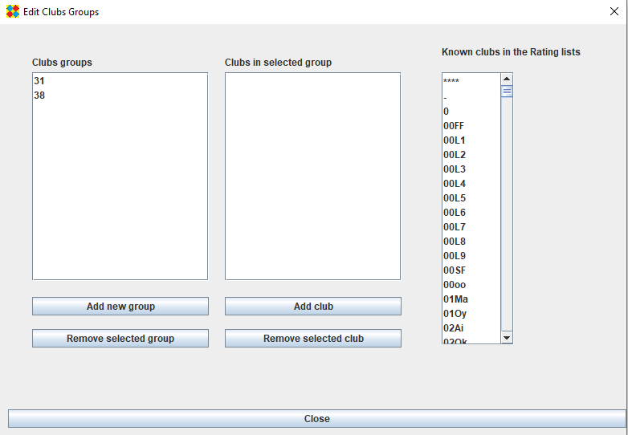

Add or remove clubs groups.
To add or remove clubs, select a clubs group, then use the add club/remove selected club buttons
On the right, a list of clubs shows the clubs appearing in the rating lists (EGF, FFG and AGA)